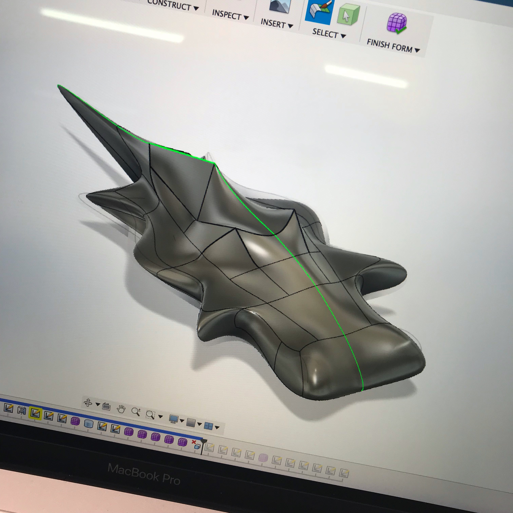
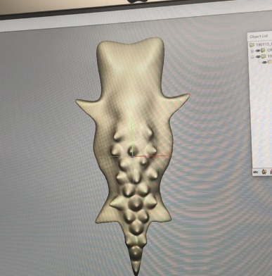
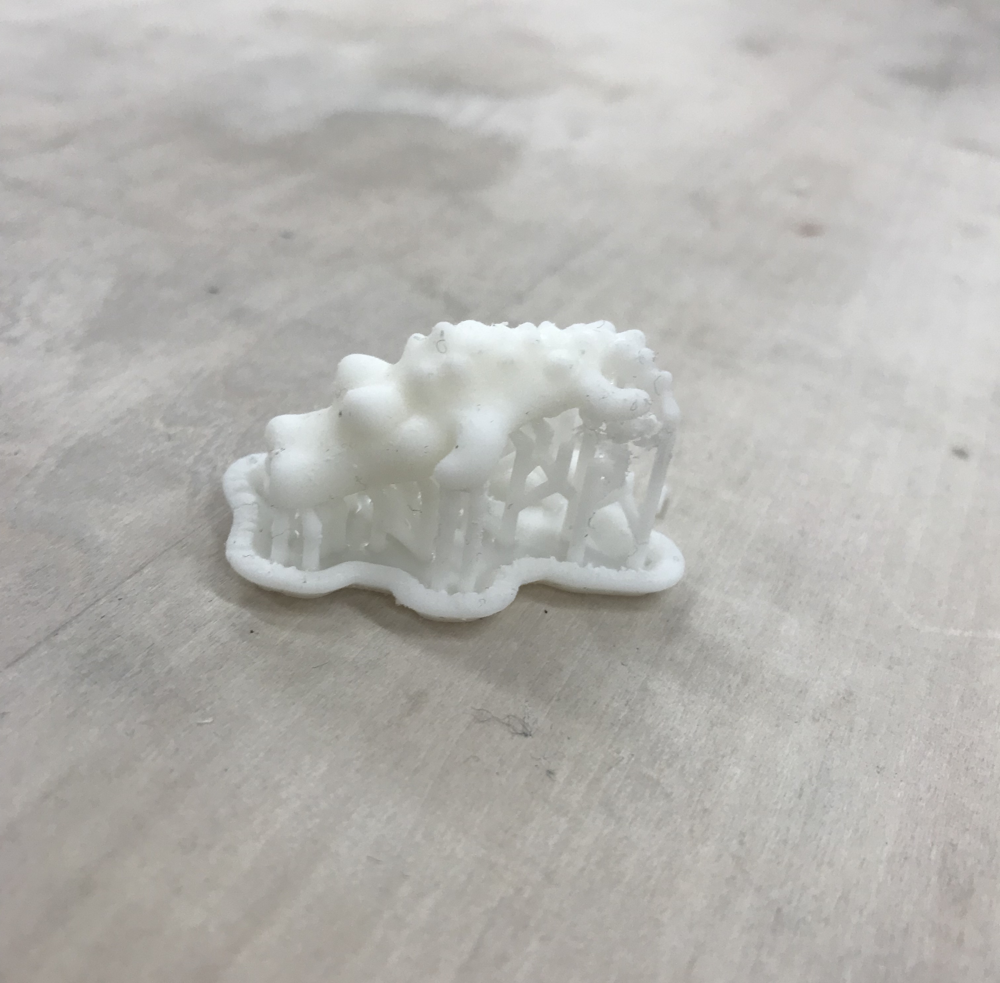

完成品を作る

Fusionで作った状態

フリーフォームで作った状態

出力した後
今まで、プロトタイプは作ってきたけどしっかり完成まではできてなかった。
そこで、今回は最後の完成まで作り上げるという課題でした。
私は以前の課題でFusion360を使っていて、データは作ったけどそれを形にするまではできてなかったので、
今回は3Dプリンターで出力するところまでしてみました。
ワニ型のケーブルバイトです。
Fusion360だけでなく、最後は長尾先生に教えてもらいながらフリーフォームも使いました。
CADは前よりかは少し使えるようになったけど、まだまだ慣れなかったのでもう少ししてみたいです。